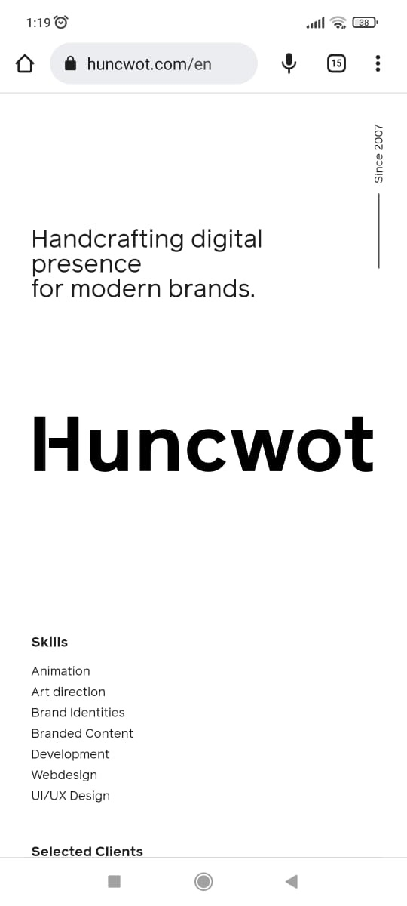
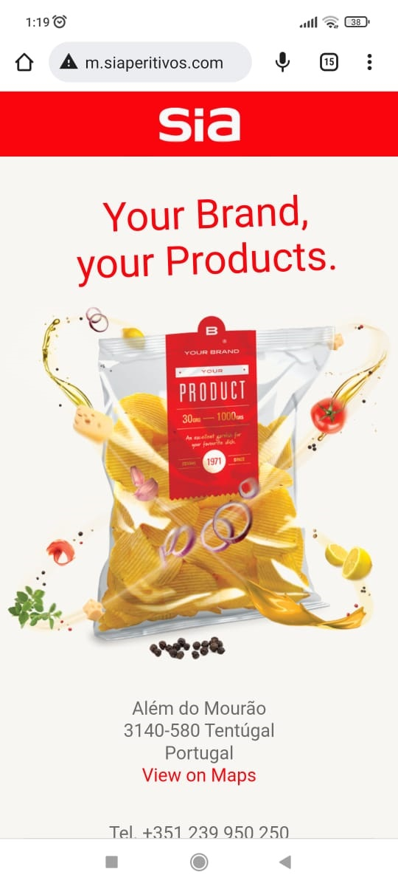
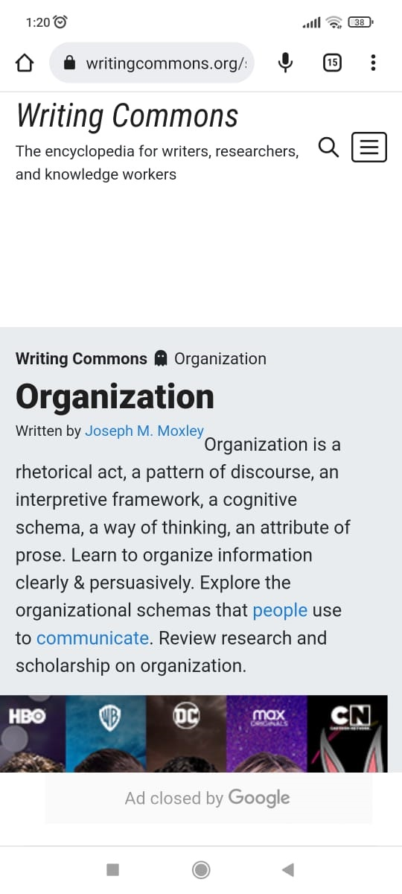

Visual Hierarchy
Huncwot
As you can see, Huncwot keeps the options for its homepage organized in a straight horizontal line (with an animation behind whichever selection you’re hovering over). It’s a tricky balance, but mandatory for every single website.
Rule of Thirds
SIA
As you can see, the main element of the photo is arranged along the center vertical line, while the main design elements (the texts) are placed at the right focal points.
PARC: Alignment
Writtin commons
As you can see, there are a list of Topics (buttons and links) at the rigth. So there are a organization of the content in good alignment steps.